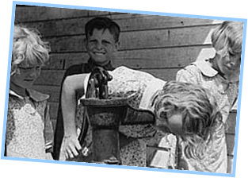

The Primed Loop Pattern
The primed-loop pattern is named after the old-west water pump which required users to pour water down the well to establish suction, before pumping began.
Here's what that looks like in pseudocode:
Prompt user and read in a value
While the value is not the sentinel
Process the data value
Prompt user and read next value
This is the classic way to process sentinel data. The code used to read each data value is duplicated, before the loop and at the end of the loop.
Here's a primed-sentinel-loop that sums a sequence, using 0 as the sentinel:
cout << "Add integers. Enter 0 when done." << endl;
int total = 0;
cout << "> ";
int value = -1;
cin >> value; // Read before the loop
while (value != 0) // Check for the sentinel
{
total += value; // No sentinel? Process
cin >> value; // Read next value
}
cout << "Total: " << total << endl; This course content is offered under a
CC
Attribution Non-Commercial license. Content in this course
can be considered under this license unless otherwise noted.
This course content is offered under a
CC
Attribution Non-Commercial license. Content in this course
can be considered under this license unless otherwise noted.